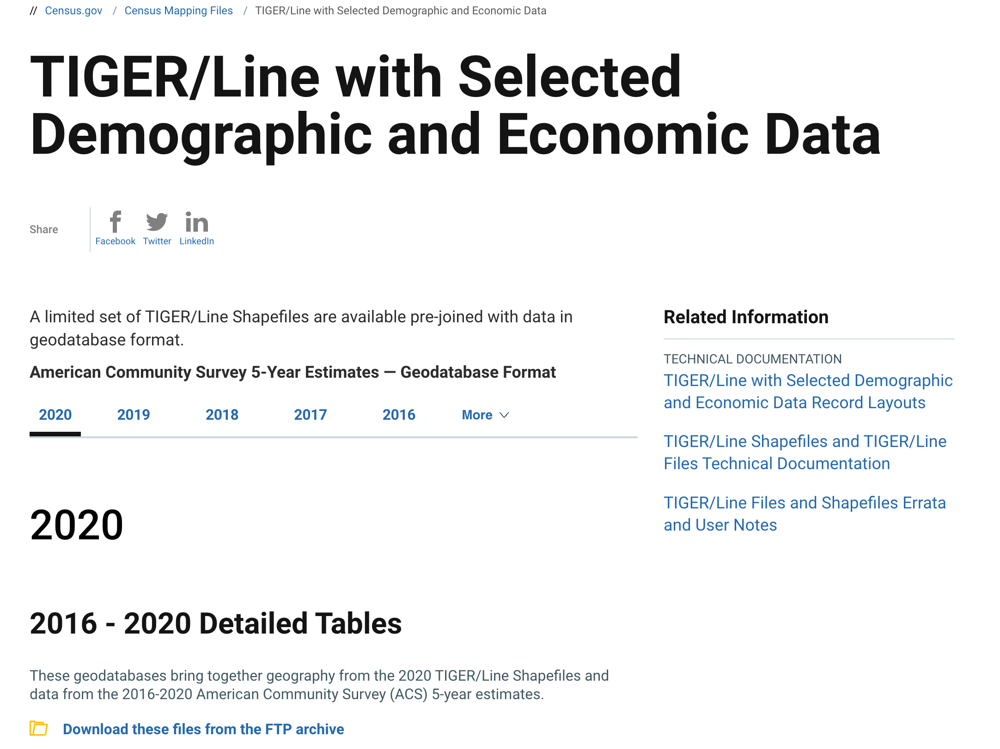

Preamble
In this fourth assignment, you will utilize the Class 4 Technical Lab as a guide to complete your fourth mapping project utilizing the US Census American Community Survey (ACS) 5-year Estimate - 2016-2020.
The Class 4 Technical Lab and steps below should be used extensively to aid with the completion of the fourth assignment due Sunday evening (02/18/23) at 11:59pm.
In Class 3 Part I thematic mapping, we applied proportional and categorical symbolization - 2 thematic mapping strategies - to points features. In this assignment, we will pivot to polygon features and apply choropleth strategies to the Class 4 assignment.
The Class 4 mapping assignment will build on some of the concepts of Class 3, but here we will add normalization techniques (spatial vs population) for census variables, as well as data classification methods. We will use some of the cartographic design strategies of Class 3, but as thematic maps are not reference maps, we do not necessarily need an orientation arrow nor map scale bar. However, good titling and legend design is critical with choropleth mapping as we discussed in Lecture 4.
A synopsis of the assignment steps:
- Choose geographic unit for your choropleth mapping.
- Import the US Census American Community Survey (ACS) 5-year Estimate - 2016-2020 product.
- Choose census concept (theme) for your choropleth mapping.
- Join tabular to spatial data.
- Normalize population variable and remove unneeded census variables from table.
- Determine map classification and map your census data.
- Create legend
- Create scale bar
- Create inset maps for Alaska, Hawaii and Puerto Rico if needed/desired.
- Create other map elements - title & map author/source tag
- Finalize map layout design, export as PDF, PNG or TIFF and submit assignment to Canvas Class 4.
Data
The dataset utilized in this mapping will be the US Census American Community Survey (ACS) 5-year Estimate - 2016-2020 product.

Make sure to review the census api for the product to determine your census theme. Also make sure to choose your census geographic unit. Use the census hierarchy as a guide.
Refer to the Class 4 Technical Lab to connect your assignment .mxd to ArcCatalog and the census .gdb for your geographic unit of chose (census block groups, census tracts, counties, ect.)
Class 4 Readings:
This week’s reading that will be featured on the upcoming quiz will be from Essentials of Geographic Information Systems textbook. There are also several supplemental readings for your reference (these will not be featured on the quiz).
As Week 5 will fall on President’s Day (Monday 02/19/23), this week’s quiz will open Sunday 7AM and run until Sunday at 11:59PM.
The Class 4 quiz (02/18/2023 - Sunday) will features 10 questions covering content in the textbook Chapter 4 and Chapter 5 as noted below:
- Essentials of Geographic Information Systems textbook - Chapter 4, Section 4.4 Cartographic Data Classification - pages 85 - 90.
- Essentials of Geographic Information Systems textbook - Chapter 5, Section 5.1 Geographic Data Acquisition - pages 91 - 93.
- Read Section Attribute Data Types.
- Read Section Measurement Scale.
Supplemental readings: SQL cheatsheet (Not necessary for Class 4 assignment; good for general reference) Normalizing Census Data Normalizing Census Data Formulas
Assignment Step 1
Download your chosen geographic unit
.gdbfrom the US Census via the TIGER/Line with Selected Demographic and Economic Data product option:American Community Survey 5-Year Estimates — Geodatabase Format
Make sure to use the 2016 - 2020 Detailed Tables for 2020.
- Navigate to a directory folder that you make for assignment 4; create an assignment
.mxd, placing it within your assignment 4 directory. Establish an ArcCatalog connection to the unzipped.gdbthat you select at the US Census TIGER product page.
Assignment Step 2
- Refer to Class 4 Technical Lab where US Counties are used as the geographic unit of choice. Remember, for your assignment submission you are not limited to US Counties; any available geographic unit is an option of choice for your submission.
Assignment Step 3
- Next, create your table join between your choice of both geographic unit (spatial) and tabular data (census theme/concept).
Assignment Step 4
- For this submission, like the Technical Lab, apply the
NAD 1983 (2011) Contiguous USA Albersmap projection coordinate system to your mapping. Make sure to save the.mxdwhen applied before proceeding.
Assignment Step 5
- Utilize the Census API 2020 to determine your mapping theme total population and target population fields. Utilize the normalization process for populations covered in the Class 4 Technical Lab to gain a percentage representation of your chosen theme.
Assignment Step 6
- Proceed to the Geospatial Analyst extension to review the ‘shape’ of your data via the Histogram option.
- Review the ArcGIS Documentation for Geospatial Analyst Histograms as needed.
- Make sure you understand the basic statistics of your variable range before proceeding to map classification.
Assignment Step 7
- Choose your Map Classification and number of class breaks (bins) for your mapping. Remember you can also use a Manual Method to tailor your mapping to a specific purpose. Apply your method to the dataset.
Assignment Step 8
- In this final step, develop your map layout utilzing bookmarks to ensure you have all the map elements necessary for this week’s submission. Refer to Map Layout & Deliverable below.
Map layout & Deliverable:
To development the final map design, utilize the map example PDFs below to help guide your process.
Final map layout will include the following elements on either a 11x17” or 8.5x11” Portrait/Landscape 300 DPI:
Main map frame featuring your geographic unit of choice with choropleth symbolization for your census variable.
- A map title
- Legend representing the map classification for your census variable
- Simple scale bar (optional)
- Inset map(s) (optional - use multiple inset maps for Alaska, Hawaii, Puerto Rico)
If a PDF export is exhibiting a large file size, .png or .tiff are acceptable.
Utilize the following Map Examples to guide your design process:
Further Reference:
US Census Links:
- American Factfinder
- American Community Survey - ACS
- ACS DATA
- US Census TIGER Geometry
- Census APIs for developers
Online tools & utilities to aid thematic map design:
Helpful articles and resources for census data and thematic mapping techniques:
- Classification methods in ArcGIS
- Normalizing Census Data using ArcMap
- September 2017 Census Poverty Demographics
- Overview of Dasymetric Thematic Mapping techniques
- How Histograms Work
- Per Capita, Rates and Comparisons
Case Study - The Marshall Project:
The Marshall Project extracted the number of adults in correctional facilities per county from the 2000, 2010 and 2020 Decennial Census.